-
Joyce Byers
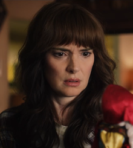Joyce Byers (née Horowitz), portrayed by Winona Ryder, is a main character in Stranger Things. She is the financially struggling single mother of Jonathan and Will Byers, the foster mother of Eleven, and the best friend/eventual girlfriend of Jim Hopper.
-
Jim Hopper
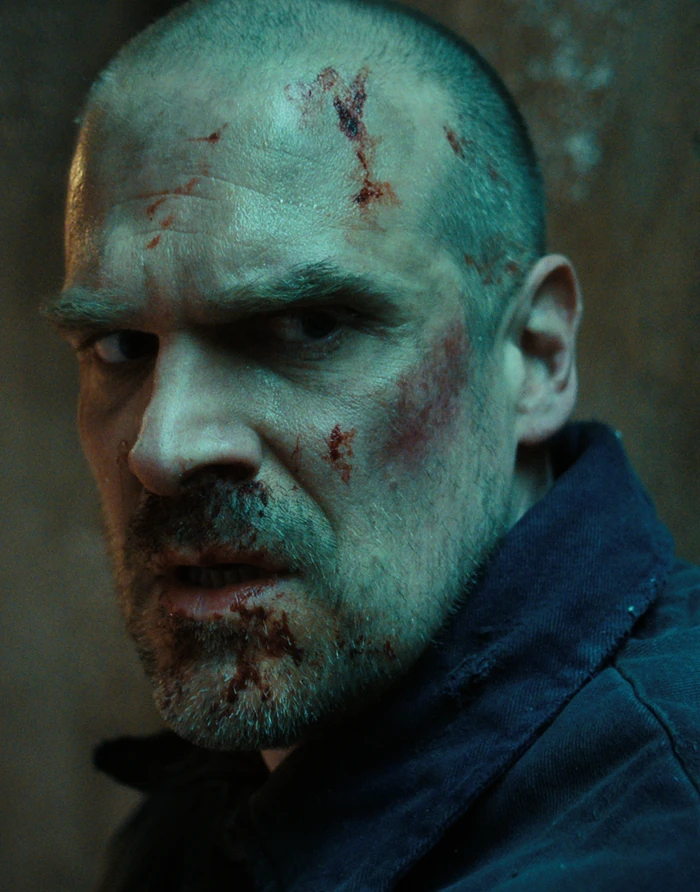James "Jim" Hopper, also known as just Hopper, is a main character in Stranger Things. He is portrayed by David Harbour. Hopper is Chief of Police in Hawkins, Indiana,
-
Mike Wheeler
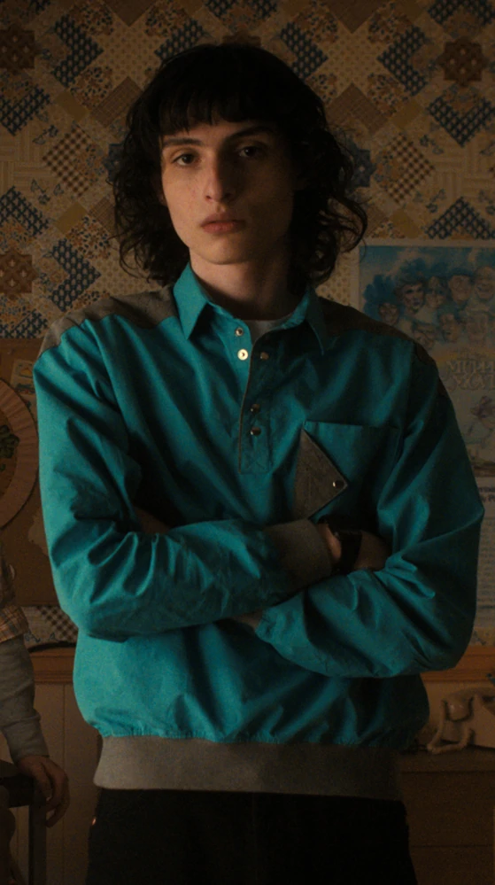Michael "Mike" Wheeler, portrayed by Finn Wolfhard, is a main character in Stranger Things. The leader of the Party, he is the boyfriend of Eleven, the best friend of Dustin Henderson, Lucas Sinclair, Will Byers, and Max Mayfield, and the younger brother of Nancy Wheeler.
-
Eleven
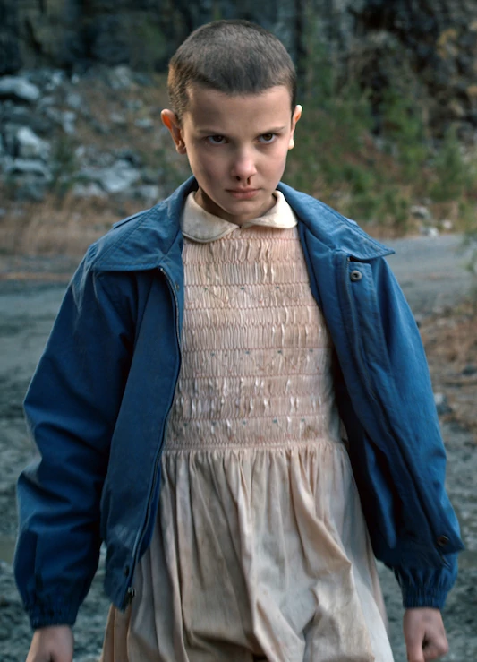Jane "El" Hopper (born Jane Ives) and better known as just Eleven, is a main character in Stranger Things. She is portrayed by Millie Bobby Brown. Kidnapped at birth by Dr. Martin Brenner, Eleven was raised in Hawkins National Laboratory to enhance her psychokinetic abilities inherited from her mother.
-
Dustin Henderson
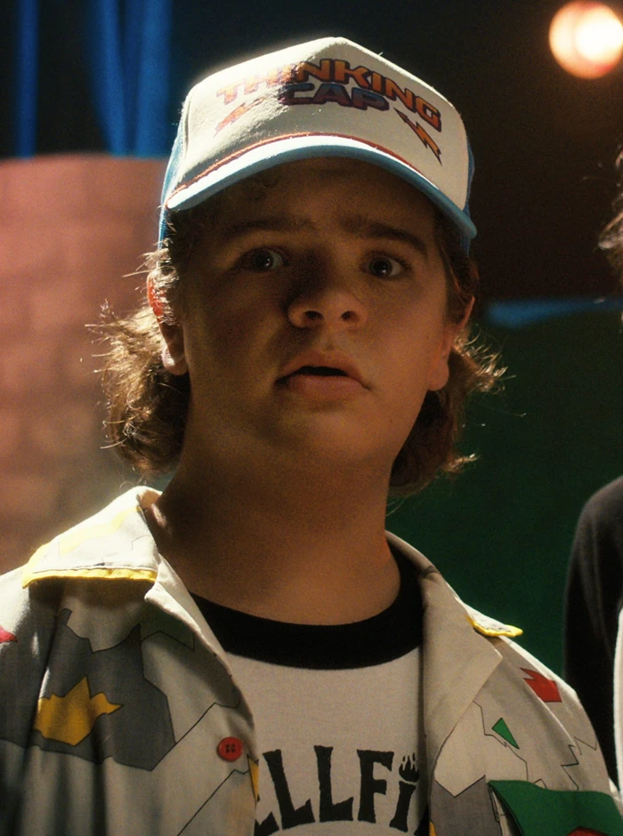Dustin Henderson, portrayed by Gaten Matarazzo, is a main character in Stranger Things. He is the best friend of Mike Wheeler, Eleven, Lucas Sinclair, Will Byers, Max Mayfield, Eddie Munson and Steve Harrington, and is the boyfriend of Suzie Bingham. He is one of the members in The Party.
-
Lucas Sinclair
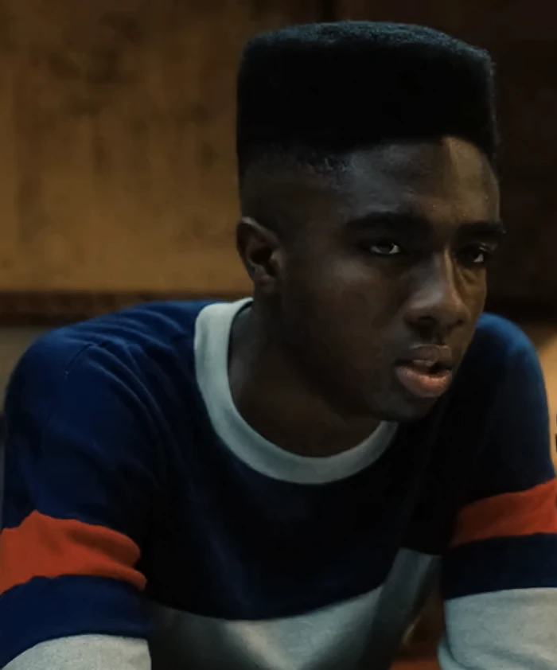Lucas Charles Sinclair, portrayed by Caleb McLaughlin, is a main character in Stranger Things. He is the ex-boyfriend of Max Mayfield and the best friend of Mike Wheeler, Dustin Henderson, Will Byers and Eleven. He is a member of The Party and a former player of The Hawkins High Basketball Team.
-
Nancy Wheeler
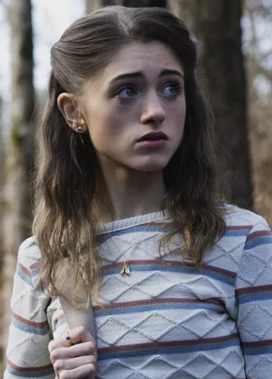Nancy Wheeler, portrayed by Natalia Dyer, is a main character in Stranger Things. Nancy is a young adult and an aspiring journalist, and an ally to "The Party". She is the older sister of Mike Wheeler, the former girlfriend of Steve Harrington, and the current girlfriend of Jonathan Byers.
-
Jonathan Byers
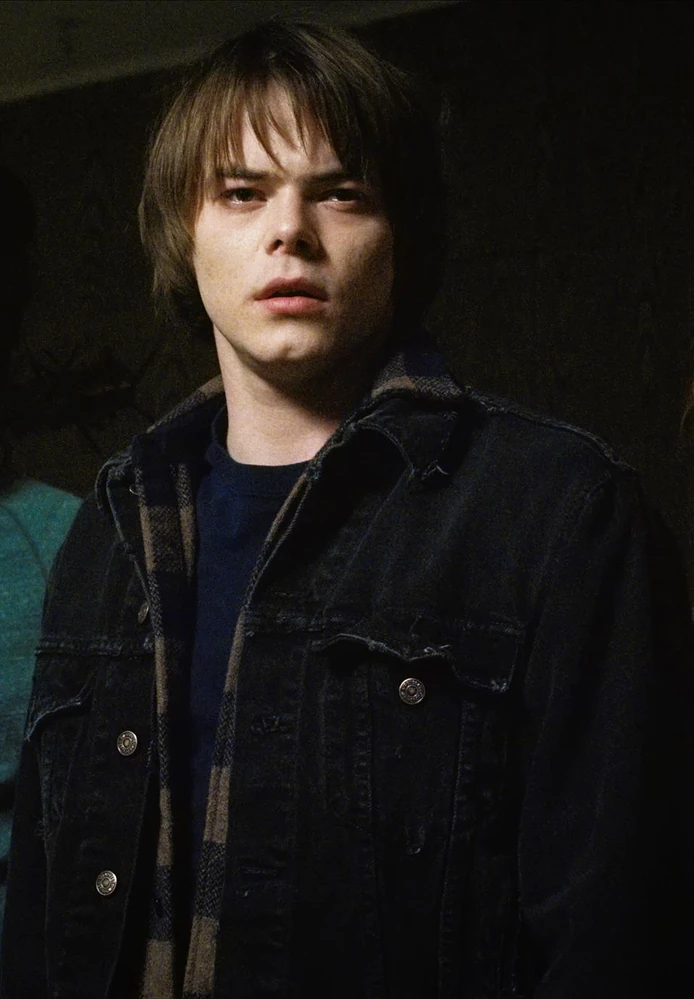Jonathan Byers, portrayed by Charlie Heaton, is a main character in Stranger Things. He is the oldest son of Joyce Byers, the older brother of Will Byers, the eventual boyfriend of Nancy Wheeler, and the best friend of Argyle.
-
Karen Wheeler
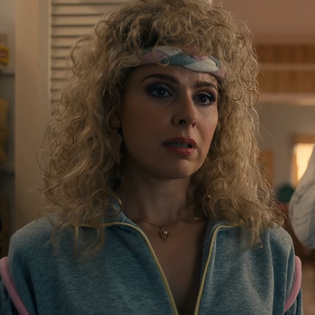Karen Wheeler, portrayed by Cara Buono, is a main character in Stranger Things. She is the loving but somewhat clueless mother of Nancy, Mike, and Holly, and the wife of Ted.
-
Dr. Martin Brenner
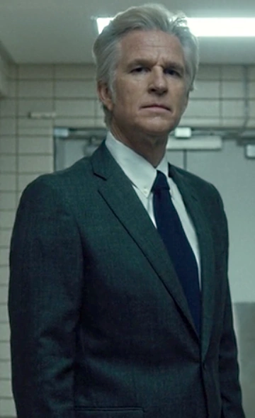Dr. Martin Brenner, portrayed by Matthew Modine, was a main character in Stranger Things, appearing in the first and fourth seasons. Brenner also makes a guest appearance in the show's second season, and is the main antagonist of the novel Stranger Things: Suspicious Minds and the comic Stranger Things: SIX.
-
Steve Harrington
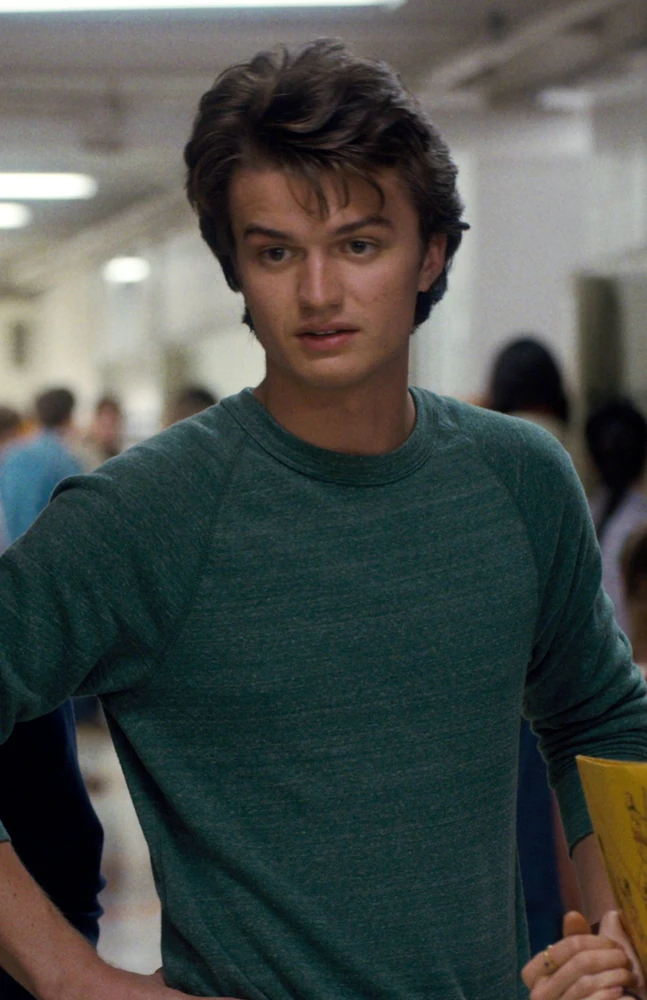Steve Harrington, portrayed by Joe Keery, is a main character in Stranger Things, having a recurring role in the first season before being promoted to the main cast from the second season onwards.
-
Will Byers
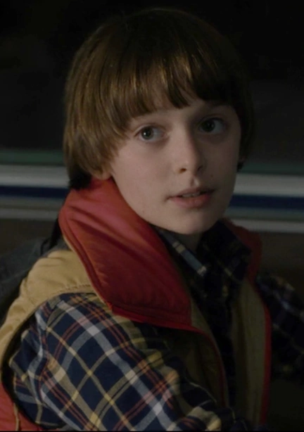William "Will" Byers, portrayed by Noah Schnapp, is a main character in Stranger Things, having a recurring but pivotal role in the first season, before being promoted to the main cast from the second season onward. He is the youngest son of Joyce Byers, the younger brother to Jonathan Byers, the stepbrother of Eleven, and the best friend of Mike Wheeler, Dustin Henderson, Lucas Sinclair, and Max Mayfield.
-
The Demogorgon
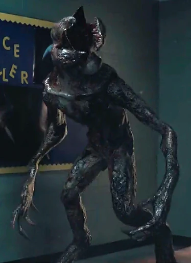The Demogorgon, also known as the Monster, is a predatory humanoid creature that entered Hawkins, Indiana in November 1983. The creature originated from the parallel dimension known as the Upside Down. The creature then set foot in Hawkins, and began hunting, killing and kidnapping various local townspeople.
-
Barbara Holland
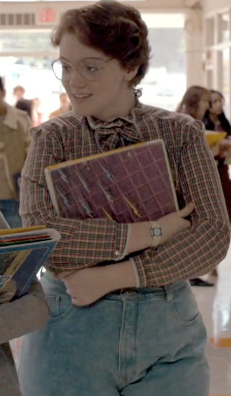Barbara Holland, also known as Barb, is a recurring character in the first season of Stranger Things. She is portrayed by Shannon Purser.
-
Ted Wheeler
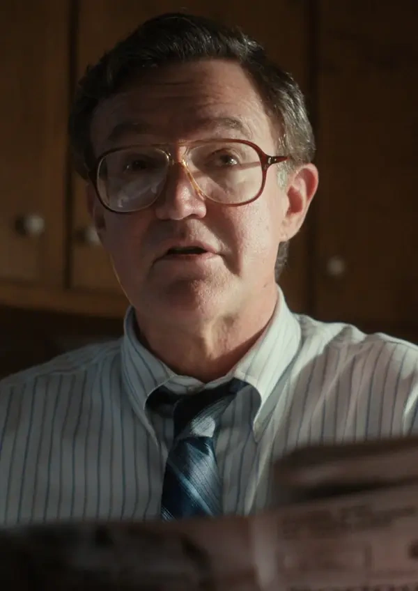Ted Wheeler is a recurring character in Stranger Things, portrayed by comic actor Joe Chrest. He is the perpetually exasperated - and perpetually clueless - patriarch of the Wheeler family.
-
Holly Wheeler
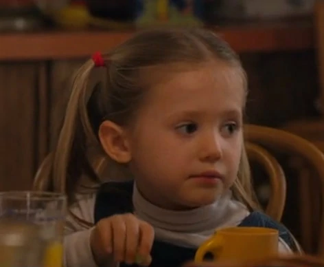Holly is the younger sister of Nancy and Mike Wheeler and the daughter of Karen and Ted Wheeler.
Characters
Characters are listed based on the season in which they first appeared. Season regulars will appear at the top of each list, with characters credited as also starring and recurring appearing lower on the list.